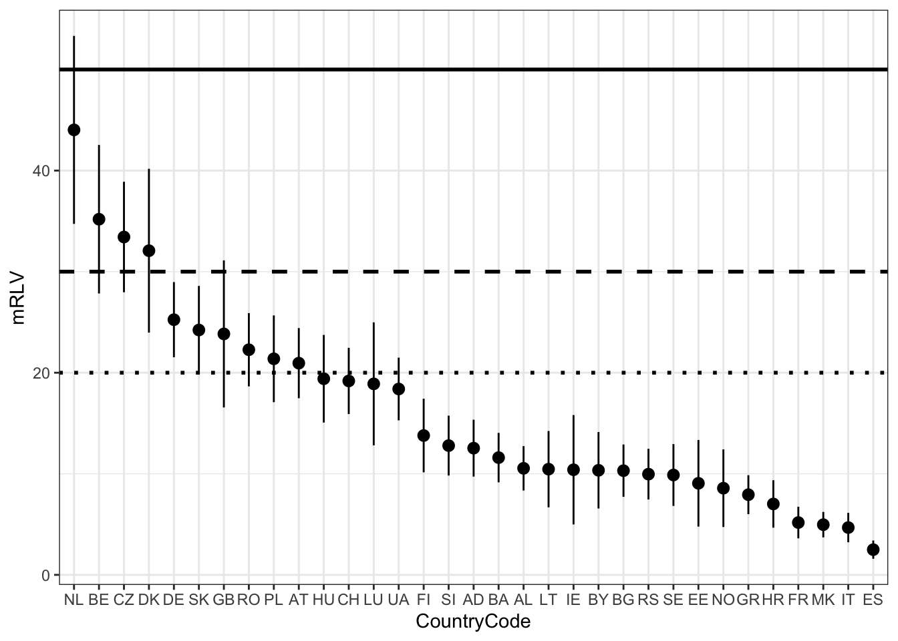
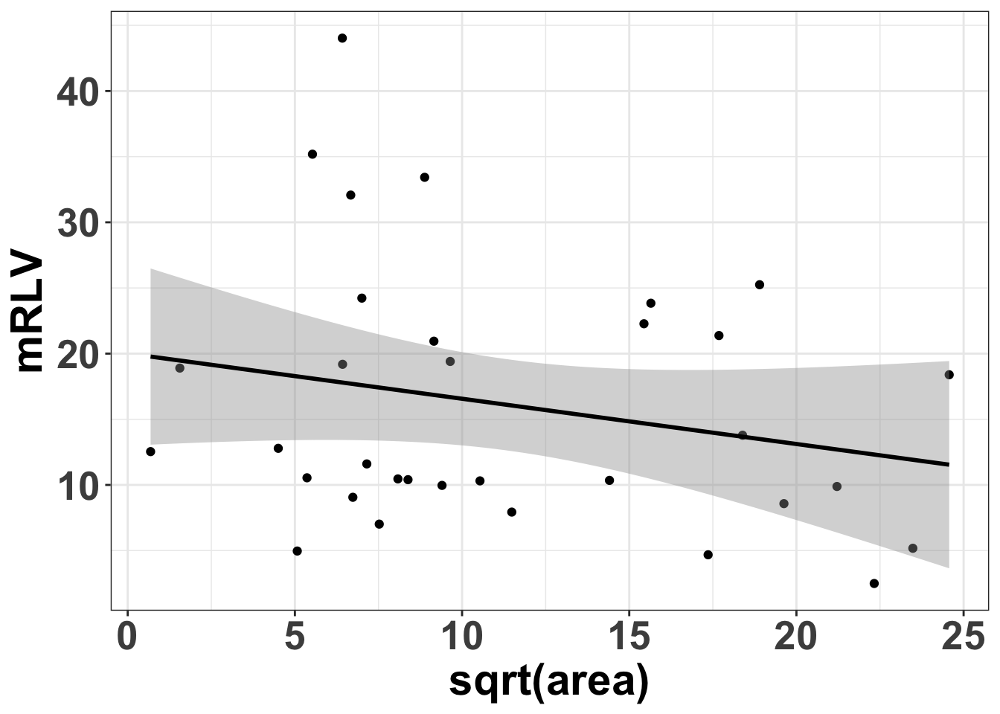

This document uses the National checklists and red lists for European butterflies dataset in this repository to create the tables and figures for Maes et al. (2019). It associated red list categories with numeric values to create weighted red list values per country and species. The source file for this document can be found here.
library(tidyverse) # To do data science
library(tidylog) # To provide feedback on dplyr functions
library(magrittr) # To use %<>% pipes
library(here) # To find files
library(janitor) # To clean input data
library(gam) # To work with generalized additive modelsThe source data is maintained in a Google Spreadsheet and copied by src/dwc_mapping.Rmd to data/raw, from which we read it:
species_list <- read_csv(here::here("data", "raw", "taxa.csv"))
distribution <- read_csv(here::here("data", "raw", "distribution.csv"))
country_info <- read_csv(here::here("data", "raw", "regions.csv"))Create a dataframe of the taxa per country (= distributions) and associate with country information:
analysis_data <-
distribution %>%
left_join(country_info, by = "region_code")See distinct red list categories:
analysis_data %>% distinct(rlc)Associate a weighted red list value (see paper):
analysis_data %<>% mutate(rlc_numeric = recode(rlc,
RE = 100,
CR = 80,
EN = 50,
VU = 30,
NT = 20,
LC = 1,
DD = 1,
Unknown = 1,
R = 20, # Rare, used for Germany
NE = 1,
`LC/NE` = 1,
NtA = NA_real_,
NRLA = NA_real_
))Exclude regional scientific names without an official scientific name:
analysis_data %<>% filter(!is.na(scientific_name)) # 11 rowsRemove duplicated rows (e.g. two local scientific names that were mapped to one):
analysis_data %<>% distinct(scientific_name, region_code, status, rlc, .keep_all = TRUE) # 17 rowsShow any remaining scientific_name + region_code duplicates that will be used in analysis:
analysis_data %>% filter(use == "y") %>% get_dupes(scientific_name, region_code) # 0 rowsExclude non-countries, islands, and non-official scientific names. Keep island groups:
analysis_data %<>% filter(
!is.na(country_code), # Exclude Europe, EU27, Macaronesia
!str_detect(region_code, "MA_AZ_"), # Exclude Azores islands, keep island group MA_AZ
!str_detect(region_code, "MA_CA_"), # Exclude Canary islands, keep island group MA_CA
!str_detect(region_code, "MA_MA_") # Exclude Madeira islands, keep island group MA_MA
)Only include taxa to be used for analysis (column use, based on breeding, regular migrant, regionally extinct, etc.):
analysis_data %<>% filter(use == "y")Select useful fields and rename region_code to country_code (including countries + island groups):
analysis_data %<>%
select(
scientific_name,
region_code,
country_name,
area,
part_of_eu,
status,
endemic,
rlc,
rlc_numeric
) %>%
rename(country_code = region_code)Sort values by country, species:
analysis_data %<>% arrange(country_code, scientific_name)Save file:
write_csv(analysis_data, here::here("data", "interim", "analysis_data.csv"), na = "")species_per_country <-
analysis_data %>%
group_by(country_name, country_code) %>%
summarize(
`n_species` = n_distinct(scientific_name),
`n_endemic_species` = sum(!is.na(endemic))
)
write_csv(species_per_country, here::here("reports", "species_per_country.csv"), na = "")Linear model:
mean_rlc_per_country <-
analysis_data %>%
drop_na(rlc_numeric) %>%
group_by(country_code) %>%
do(
lm(rlc_numeric ~ 1, data = .data) %>%
predict.lm(
.,
newdata = data.frame(rlc_numeric_a = 0, rlc_numeric_b = 1),
interval = "confidence",
level = 0.95
) %>%
as.data.frame()
)Save data:
write.csv(mean_rlc_per_country, here::here("data", "interim", "mean_rlc_per_country.csv"), na = "")Create plot:
mean_rlc_per_country_plot <- ggplot(mean_rlc_per_country, aes(x = reorder(country_code, -fit), y = fit)) +
geom_point() +
geom_pointrange(aes(ymin = lwr, ymax = upr)) +
xlab("CountryCode") +
ylab("mRLV") +
geom_hline(yintercept = 50, size = 1, linetype = 1) + # colour = "red")
geom_hline(yintercept = 30, size = 1, linetype = 2) + # , colour = "orange"
geom_hline(yintercept = 20, size = 1, linetype = 3) + # , colour = "yellow"
theme_bw()
ggsave(
mean_rlc_per_country_plot,
file = here::here("reports", "mean_rlv_per_country.jpg"),
device = "jpeg",
dpi = 300,
height = 5,
width = 10
)
mean_rlc_per_country_plot
We create this table by creating a number of dataframes summarizing information per scientific_name and then joining these together.
# Use distribution df, since region_code = "EUR"/"EU27" is excluded from analysis data
rlc_eur <-
distribution %>%
filter(region_code == "EUR") %>%
filter(use == "y") %>%
select(scientific_name, rlc, endemic) %>%
rename(rlc_eur = rlc, endemic_eur = endemic)
rlc_eu27 <-
distribution %>%
filter(region_code == "EU27") %>%
filter(use == "y") %>%
select(scientific_name, rlc, endemic) %>%
rename(rlc_eu27 = rlc, endemic_eu27 = endemic)endemic <-
analysis_data %>%
filter(!is.na(endemic)) %>%
group_by(scientific_name) %>%
summarize(
endemic = paste(unique(endemic), collapse = "|")
)counts_eur <-
analysis_data %>% # Contains all countries/island groups = Europe
group_by(scientific_name) %>%
summarize(
n_species_eur = n(),
n_rl_eur = sum(!is.na(rlc_numeric))
)counts_eu27 <-
analysis_data %>%
filter(!is.na(part_of_eu)) %>%
group_by(scientific_name) %>%
summarize(
n_species_eu27 = n(),
n_rl_eu27 = sum(!is.na(rlc_numeric))
)weighted_rlv_per_species <-
analysis_data %>%
group_by(scientific_name) %>%
drop_na(rlc_numeric) %>%
do(
lm(rlc_numeric ~ 1, weights = sqrt(area), data = .) %>%
predict.lm(
.,
newdata = data.frame(rlc_numeric_a = 0, rlc_numeric_b = 1),
interval = "confidence",
level = 0.95
) %>%
as.data.frame()
)Save data:
write.csv(weighted_rlv_per_species, here::here("data", "interim", "weighted_rlv_per_species.csv"), na = "")weighted_rlv_per_species_eu27 <-
analysis_data %>%
drop_na(rlc_numeric) %>%
filter(!is.na(part_of_eu)) %>%
group_by(scientific_name) %>%
do(
lm(rlc_numeric ~ 1, weights = sqrt(area), data = .) %>%
predict.lm(
.,
newdata = data.frame(rlc_numeric = 0, rlc_numeric = 1),
interval = "confidence",
level = 0.95
) %>%
as.data.frame()
)Join information together with species list:
weighted_species_list <-
species_list %>%
left_join(rlc_eur, by = "scientific_name") %>%
left_join(rlc_eu27, by = "scientific_name") %>%
left_join(endemic, by = "scientific_name") %>%
left_join(counts_eur, by = "scientific_name") %>%
left_join(counts_eu27, by = "scientific_name") %>%
left_join(
weighted_rlv_per_species %>% select(scientific_name, fit) %>% rename(wsrlv_eur = fit),
by = "scientific_name") %>%
left_join(
weighted_rlv_per_species_eu27 %>% select(scientific_name, fit) %>% rename(wsrlv_eu27 = fit),
by = "scientific_name"
)Number of taxa should remain the same:
nrow(species_list) == nrow(weighted_species_list) # Expect TRUE## [1] TRUEOrder by wsrlv_eur and select columns:
table3 <- weighted_species_list %>%
arrange(desc(wsrlv_eur), desc(n_species_eur)) %>%
select(
scientific_name,
endemic_eur,
edge_of_range,
wsrlv_eur,
n_species_eur,
n_rl_eur,
rlc_eur,
wsrlv_eu27,
n_species_eu27,
n_rl_eu27,
rlc_eu27,
habitats_directive,
endemic
) %>%
mutate(
wsrlv_eur = round(wsrlv_eur, 2),
wsrlv_eu27 = round(wsrlv_eu27, 2)
)Save file:
write_csv(table3, here::here("reports", "weighted_species_list.csv"), na = "")Calculate mean rlc per sqrt of area:
mean_rlc_sqrt_area <-
analysis_data %>%
mutate(
rlc_numeric = round(rlc_numeric, 0),
sqrt_area = sqrt(area/1000) # Divide by 1000
) %>%
group_by(sqrt_area) %>%
summarize(
mean_rlc_numeric = mean(rlc_numeric, na.rm = TRUE)
) %>%
filter(!is.na(mean_rlc_numeric))Create plot:
mean_rlc_sqrt_area_plot <- ggplot(mean_rlc_sqrt_area, aes(x = sqrt_area, y = mean_rlc_numeric)) +
geom_point() +
geom_smooth(method = "lm", se = TRUE, colour = "black", formula = y ~ splines::ns(x, 1)) +
theme_bw() +
labs(x = "sqrt(area)", y = "mRLV") +
theme(axis.text.x = element_text(face = "bold", size = 20), axis.text.y = element_text(face = "bold", size = 20)) +
theme(axis.title = element_text(face = "bold", size = 22))
mean_rlc_sqrt_area_plot
ggsave(mean_rlc_sqrt_area_plot, file = here::here("reports/mean_rlv_per_sqrt_area.jpg"), device = "jpeg", dpi = 300, height = 6, width = 10)